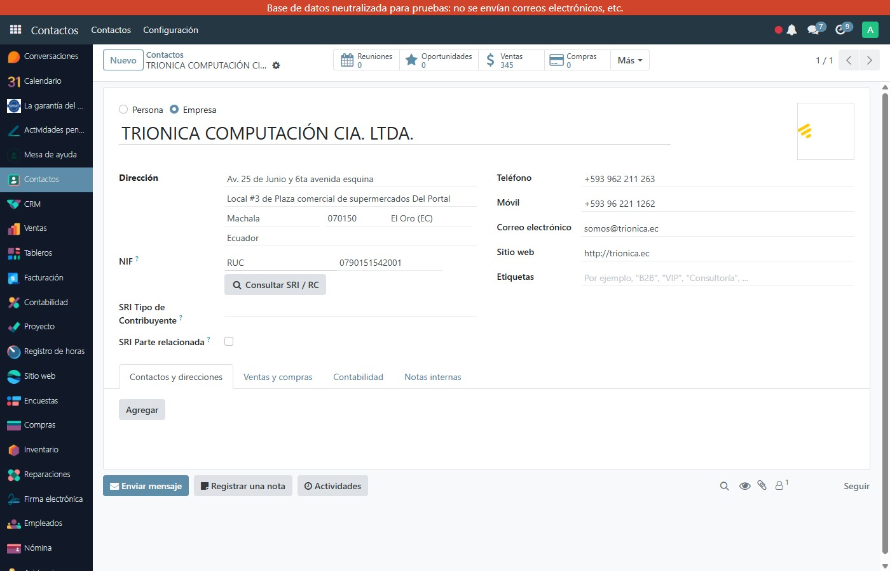
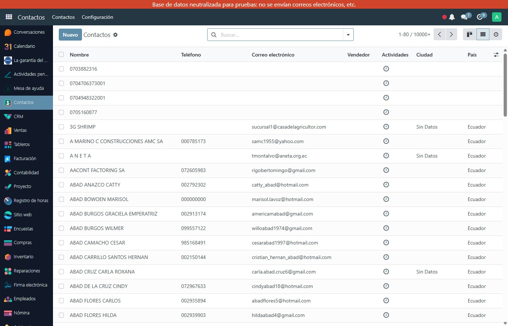

Valida RUC, cédula y pasaporte en tiempo real y autocompleta razón social, estado SRI, régimen tributario y datos del contribuyente desde el SRI y Registro Civil — con un clic en Odoo 17.
Verifica el algoritmo ecuatoriano (módulo 10/11) de cédulas (10 dígitos) y RUC empresariales (13 dígitos) antes de guardar. Cero errores de datos en tus contactos.
Un clic consulta el SRI y rellena: razón social, nombre comercial, estado del contribuyente, régimen tributario (RIMPE, General), actividad económica y más.
Para personas naturales con cédula, obtiene el nombre completo desde el Registro Civil ecuatoriano. Datos oficiales en tiempo real.
Guarda estado, régimen, obligado a llevar contabilidad, agente de retención (con número resolución), contribuyente especial y fecha de verificación.
Impide crear dos contactos con el mismo RUC o cédula dentro de la empresa. Base de datos de clientes y proveedores limpia y sin duplicados.
URL y token del API configurables en Ajustes Generales. Compatible con consultas.ec o tu propio servidor privado en tu infraestructura.
Crea o edita un contacto. Escribe el RUC (13 dígitos) o cédula (10 dígitos) en el campo NIF/VAT.
El botón azul junto al NIF consulta el API del SRI y Registro Civil en menos de 2 segundos.
Razón social, estado, régimen y campos tributarios se llenan automáticamente. ¡Cero tipeo manual!
Botón "Consultar SRI / RC" en el formulario de contacto — autocompleta razón social y datos tributarios en un clic

Lista de contactos con miles de empresas y personas naturales ecuatorianas con identificación validada